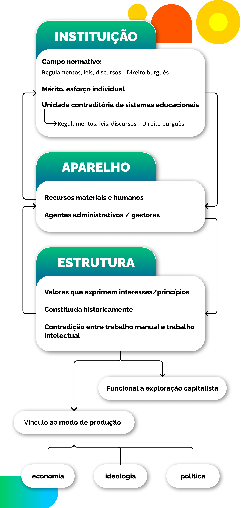

A disputa da noção de administração
No artigo "Política e gestão da educação: explorando o significado dos termos", (2016) explora as dimensões conceituais da política e da gestão, a partir do pressuposto de que ambas respondem às lutas e embates sociais. A autora demonstra que há processos destinados a operacionalizar as políticas do Estado, mas que a forma como isso ocorre depende muito da visão dos responsáveis por esses processos. Usando o sistema conceitual que construímos até aqui, poderíamos dizer que há aparelhos específicos (processos) destinados a organizar os valores institucionais (políticas). Tal organização depende das distintas visões sobre a estrutura vigente, visões que conformam projetos de sociedade que, por sua vez, entram em disputa.
Para refletir: gestão da educação e democratização
Aqui, gostaríamos de sugerir uma vídeo-entrevista “Democratização e privatização: Uma relação possível na gestão da educação básica pública?” da autora Elma Carvalho, como forma de reflexão e contribuição ao debate acerca dos conceitos levantados.
Título: Democratização e Privatização: conversa com Elma Carvalho
Fonte: Carvalho (2021); MDMA (2012).
Elaboração: Prosa (2025i).
Há, por sua vez, uma série de terminologias e conceitos que expressam essas disputas e que fundamentaram um campo específico de estudos, convencionalmente denominado gestão educacional. Um aspecto interessante desse campo é, como mostra Carvalho (2016), a diferença entre gestão e administração, termos muitas vezes assumidos como sinônimos, sobretudo no debate educacional.
Uma possibilidade de perspectiva remete à ideia de administração uma concepção ampla, que engloba as políticas, o planejamento, a gestão e a avaliação da educação, e que poderia ser utilizada para descrever processos relativos a qualquer modo de produção. Seria, então, uma instância própria de qualquer prática educativa sistematizada (Carvalho, 2016) e estaria vinculada, de modo geral, às normas, diretrizes, práticas e atividades que buscam garantir a concretização dos princípios estruturais subjacentes àquelas instituições e aparelhos.
Já a ideia de gestão, inserida no conceito mais amplo de administração, tem uma variabilidade histórica menor, adaptando-se à realidade de cada modo de produção. Sob o capitalismo, com maior intensidade em sua fase neoliberal (que será estudada de maneira mais aprofundada no próximo capítulo), a gestão trataria de submeter a educação à lógica empresarial e a critérios e mecanismos avaliativos condizentes com o mercado. Daí são emprestadas, por exemplo, as ideias de eficiência, responsabilização das escolas por resultados e desempenho.
Contraditoriamente, a mesma autora mostra como no campo da educação “predomina a substituição de administração por gestão, com uma nova concepção, na qual o comando autoritário/centralizado/técnico e burocrático é substituído pelo poder compartilhado/descentralizado” (Carvalho, 2016, p. 90). Como se pode observar, são várias as possibilidades de designação dos termos gestão e administração. Agora, sugerimos que você leia atentamente o texto de Elma Carvalho, para que consiga optar pela abordagem que considerar mais adequada conforme seus pressupostos e objetivos, dentro do quadro conceitual que discutimos anteriormente.
Até aqui, o mais relevante é ser capaz de observar as disputas conceituais como resultado dos embates de projetos de sociedade, à luz da afirmação de Vitor Paro (2001, p. 13):
a atividade administrativa não se dá no vazio, mas em condições históricas determinadas para atender necessidades e interesses de pessoas e grupos.
Sintetizando
De modo geral, construímos dois sistemas conceituais que estão relacionados. O primeiro estabelece uma forma de observação dos fenômenos escolares a partir das noções de estrutura, aparelho e instituição. O segundo apresenta concepções educativas referentes à reprodução dos valores estruturais ou à transição para uma nova realidade, onde localizamos as ideias de gestão ou administração escolar. Buscando construir sínteses, o esquema a seguir representa alguns aspectos desses sistemas conceituais, enfocando a realidade histórica específica do modo de produção capitalista.

Título: Instituição, aparelho e estrutura
Fonte: Prosa (2025j).